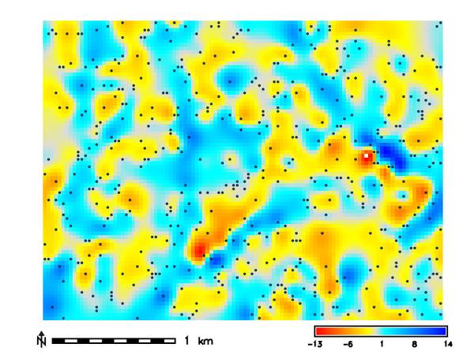
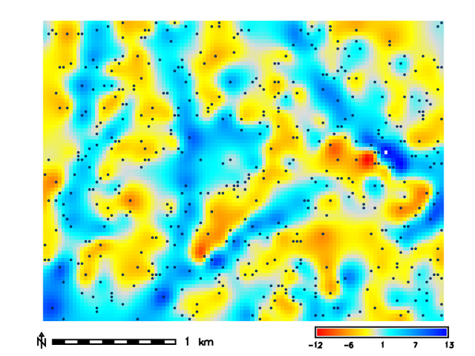
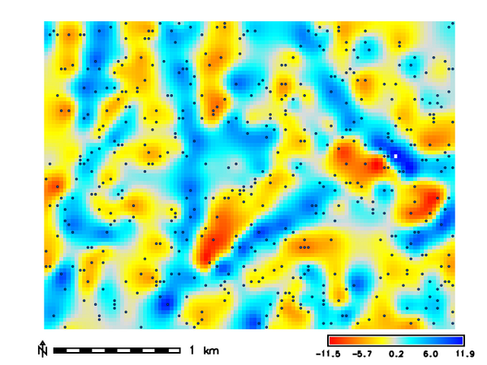
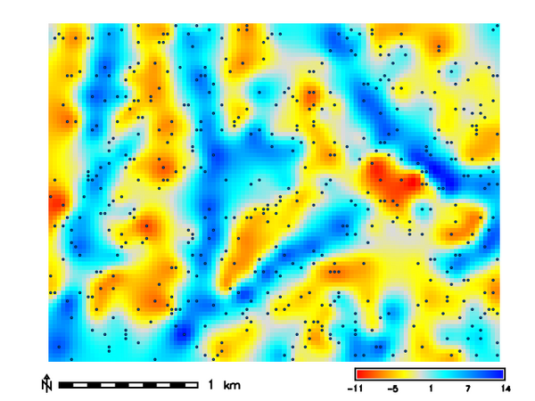

DESCRIPTION
v.surf.rst.cv finds well performing parameters for the
regularized spline with tension (RST) interpolation implemented in
v.surf.rst
by running its leave-one-out cross-validation procedure over combinations
of parameter values. For every combination, each input point is withheld
in turn, the surface is approximated from the remaining points, and the
predictive error (predicted minus observed value) is recorded. The tool
summarizes the errors of every combination, reports the best one, and
optionally saves the cross-validation error maps. The mask,
zcolumn, where, zscale, and layer options are
passed through unchanged to every v.surf.rst run.
The tension and smooth options accept lists of values and
form the core search space. The remaining RST parameters (npmin,
segmax, dmin, dmax, theta, scalex)
also accept lists and are swept as an outer loop: every combination of
their values is combined with the full tension and smoothing search. See
the NOTES for why these parameters need more care when interpreting
results.
Two search methods are available:
- method=grid (default) evaluates the full Cartesian product of
the tension and smoothing lists.
- method=refine first evaluates the tension x smoothing grid and
then recursively refines the search around the best combination:
geometric midpoints between the best cell and its neighbors are
evaluated, up to levels times or until the error differences
within the refinement window become negligible. Use it to locate a finer
optimum without enumerating a dense grid. When the best combination lies
on the border of the searched range, a warning recommends widening the
range.
Parameter combinations are cross-validated in parallel; nprocs
controls the number of concurrent runs (each v.surf.rst process runs
single threaded). A failing combination is reported as a row with an
error instead of stopping the search.
Error metrics
For each combination the tool reports the number of cross-validated
points (n), mean error (me, a measure of bias), mean
absolute error (mae), root mean square error (rmse),
median error, normalized median absolute deviation (nmad), the
68.3rd and 95th percentiles of the absolute error (p68,
p95), the extreme errors, and the normalization factor
(dnorm, see below). The best combination is selected by RMSE.
The best combinations under MAE and NMAD are also reported; when the
metrics disagree, the tool warns, because the selection is then driven by
a small number of large errors and the residual distribution should be
inspected before accepting the result.
The reported cross-validation error of the winning combination is an
optimistic estimate of the accuracy of the final surface, because it was
selected as the minimum over many candidates. Use an independent set of
withheld points to estimate the accuracy of the resulting surface.
Tension, dnorm, and the -t flag
v.surf.rst internally normalizes coordinates by a factor
dnorm = sqrt(area * npmin / n)
- A tension optimized for one data set does not transfer to another
data set, or even to a subsample of the same data set, unless the
-t flag (scale dependent tension) is used. With -t, tension
is rescaled by dnorm/1000 and acts on the real coordinates.
- Sweeping npmin together with tension without -t
compares different effective tensions across rows; the tool warns in this
case.
The computed dnorm is reported for every combination, and with
-t the rescaled tension is reported as tension_rescaled.
The reported dnorm is derived from the bounding box of the input
points and is approximate when the computational region clips part of the
input.
Cross-validation on large data sets
Leave-one-out cross-validation is reasonable for up to several thousand
points. For larger data sets, set npoints to cross-validate on a
spatially stratified random subsample: one point is drawn per cell of a
coarse grid sized to yield approximately npoints points, which
preserves the spatial coverage of clustered point clouds better than
simple random sampling. Use seed for a reproducible selection.
Combine subsampling with the -t flag, otherwise the optimal
tension found on the subsample does not apply at full point density (the
tool warns about this).
Saved cross-validation maps
When cv_prefix is set, the cross-validation error vector map of
every combination is kept as <cv_prefix>_<index>
(the cvdev column of the report gives the map name for each
row), the errors are interpolated into a raster map of the same name, and
a diverging color scheme centered on the median error is applied to both.
The error value is stored in the flt1 attribute column as
predicted minus observed.
NOTES
Parameters swept in the outer loop change more than the model fit:
- dmin removes nearly coincident points before interpolation and
dmax inserts additional points along lines. Both change which
points receive a cross-validation error, so error metrics of rows with
different dmin or dmax values are computed over different
point sets and are not directly comparable; compare the n column
and interpret those rows with care (the tool warns when n
differs).
- npmin and segmax control segmentation. For data sets
larger than 2 x npmin points, v.surf.rst requires npmin >
segmax. To skip segmentation entirely for smaller data sets, set
segmax = 2 x npmin.
- theta and scalex (anisotropy) are supported, but the
current v.surf.rst evaluates cross-validation errors without applying the
anisotropy transformation used in the interpolation, so cross-validation
results with anisotropy are unreliable until this is fixed in GRASS; the
tool warns when they are used.
The cross-validation procedure works well only for well-sampled phenomena
and when minimizing the predictive error is the goal. The parameters
found by minimizing the predictive error may not be the best for poorly
sampled phenomena (the result could be strongly smoothed with lost
details and fluctuations) or when significant noise is present that needs
to be smoothed out.
The computational region affects the result: points outside the region
receive no cross-validation error and the default dmin is derived
from the region resolution. Compare runs only within the same region.
Results are always printed to standard output; output_file writes
the same content to a file in addition. With nprocs greater than
one, the tool runs each combination in a temporary mapset named
tmp_cv_* inside the current project to avoid database
contention; these mapsets are removed when the tool ends, but may remain
after a hard interruption and can then be removed manually.
Possible future extensions include k-fold cross-validation (which would
also make dmin/dmax rows comparable), buffered
leave-one-out for data with near-duplicate points, and spatially blocked
cross-validation for gap-filling applications.
EXAMPLES
Basic grid search
g.region raster=elevation res=30 n=220790 s=218390 w=632680 e=635910 -a
r.random input=elevation npoints=500 seed=0 vector=points -z
v.surf.rst.cv point_cloud=points tension=10,100 smooth=0.5,5.0 \
segmax=600 nprocs=4 format=json output_file=test_cv.json
{
"input": "points",
"method": "grid",
"scale_dependent_tension": false,
"subsample": null,
"region": {...},
"warnings": [],
"results": [
{
"tension": 100.0,
"smooth": 0.5,
"segmax": 600,
"cvdev": null,
"n": 500,
"me": 0.005205,
"mae": 2.006109,
"rmse": 2.715355,
"median": -0.224484,
"nmad": 2.269,
"p68": 2.305549,
"p95": 5.610012,
"min": -9.519708,
"max": 9.506766,
"error": null,
"dnorm": 2149.976744
},
...
],
"best": {"rmse": {...}, "mae": {...}, "nmad": {...}}
}
Best parameter combination (by RMSE)
--------------------------------------------------
Tension: 100
Smoothing: 0.5
segmax: 600
RMSE: 2.71536
MAE: 2.00611
NMAD: 2.269
--------------------------------------------------
Refined search
Instead of a dense grid, refine around the best coarse cell:
v.surf.rst.cv point_cloud=points tension=10,40,160 smooth=0.01,0.1,1.0 \
segmax=600 method=refine levels=3 nprocs=4
Sweeping structural parameters
Evaluate the effect of segmentation settings on the optimum, using scale
dependent tension so tension values stay comparable across npmin:
v.surf.rst.cv -t point_cloud=points tension=10,40,160 smooth=0.01,0.1,1.0 \
npmin=150,300 segmax=120 nprocs=4
Large data sets
Cross-validate on a spatially stratified subsample of 2000 points:
v.surf.rst.cv -t point_cloud=lidar_points npoints=2000 seed=42 nprocs=8
Saving the error maps
When cv_prefix is set, the error point maps are kept and
interpolated into deviation surfaces:
v.surf.rst.cv point_cloud=points tension=10,100 smooth=0.5,5.0 \
segmax=600 cv_prefix=cvdev nprocs=4

Tension: 100 Smooth: 0.5

Tension: 100 Smooth: 5

Tension: 10 Smooth: 0.5

Tension: 10 Smooth: 5
REFERENCES
- Mitasova, H., Mitas, L. and Harmon, R.S., 2005, Simultaneous spline approximation and topographic analysis for lidar elevation data in open source GIS, IEEE GRSL 2 (4), 375- 379.
- Hofierka, J., 2005, Interpolation of Radioactivity Data Using Regularized Spline with Tension. Applied GIS, Vol. 1, No. 2, pp. 16-01 to 16-13. DOI: 10.2104/ag050016
- Hofierka J., Parajka J., Mitasova H., Mitas L., 2002, Multivariate Interpolation of Precipitation Using Regularized Spline with Tension. Transactions in GIS 6(2), pp. 135-150.
- H. Mitasova, L. Mitas, B.M. Brown, D.P. Gerdes, I. Kosinovsky, 1995, Modeling spatially and temporally distributed phenomena: New methods and tools for GRASS GIS. International Journal of GIS, 9 (4), special issue on Integrating GIS and Environmental modeling, 433-446.
- Mitasova, H. and Mitas, L., 1993: Interpolation by Regularized Spline with Tension: I. Theory and Implementation, Mathematical Geology ,25, 641-655.
- Mitasova, H. and Hofierka, J., 1993: Interpolation by Regularized Spline with Tension: II. Application to Terrain Modeling and Surface Geometry Analysis, Mathematical Geology 25, 657-667.
- Mitas, L., and Mitasova H., 1988, General variational approach to the approximation problem, Computers and Mathematics with Applications, v.16, p. 983-992.
- Neteler, M. and Mitasova, H., 2008, Open Source GIS: A GRASS GIS Approach, 3rd Edition, Springer, New York, 406 pages.
- Talmi, A. and Gilat, G., 1977 : Method for Smooth Approximation of Data, Journal of Computational Physics, 23, p.93-123.
- Wahba, G., 1990, : Spline Models for Observational Data, CNMS-NSF Regional Conference series in applied mathematics, 59, SIAM, Philadelphia, Pennsylvania.
SEE ALSO
r.resamp.rst,
v.surf.bspline,
v.surf.idw,
v.surf.rst,
v.vol.rst
AUTHORS
Corey T. White NCSU GeoForAll Lab